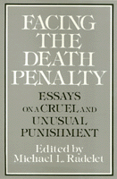

An in-depth examination of what life under a sentence of death is like
An in-depth examination of what life under a sentence of death is like


 An in-depth examination of what life under a sentence of death is like
An in-depth examination of what life under a sentence of death is like

|  |
Facing The Death PenaltyEssays on a Cruel and Unusual Punishmentedited by Michael L. Radelet, foreword by Henry Schwarzschildpaper EAN: 978-0-87722-721-2 (ISBN: 0-87722-721-7) |
"These essays...show us the human and inhuman realities of capital punishment through the eyes of the condemned and those who work with them. By focusing on those awaiting death, they present the awful truth behind the statistics in concrete, personal terms."
—William J. Bowers, author of Legal Homicide
Between 1930 and 1967, there were 3,859 executions carried out under state and civil authority in the United States. Since the ten-year moratorium on capital punishment ended in 1977, more than one hundred prisoners have been executed. There are more than two thousand men and women now living on death row awaiting their executions. Facing the Death Penalty offers an in-depth examination of what life under a sentence of death is like for condemned inmates and their families, how and why various professionals assist them in their struggle for life, and what these personal experiences with capital punishment tell us about the wisdom of this penal policy.
The contributors include historians, attorneys, sociologists, anthropologists, criminologists, a minister, a philosopher, and three prisoners. One of the prisoner-contributors is Willie Jasper Darden, Jr., whose case and recent execution after fourteen years on death row drew international attention. The inter-disciplinary perspectives offered in this book will not solve the death penalty debate, but they offer important and unique insights on the full effects of American capital punishment provisions. While the book does not set out to generate sympathy for those convicted of horrible crimes, taken together, the essays build a case for abolition of the death penalty.
"This work stands with the best of what�s been written. It represents the best of those who have seen the worst."
—Colman McCarthy, The Washington Post Book World
Foreword – Henry Schwarzschild
1. Introduction and Overview – Michael L. Radelet
2. The Fraternity of Death – Michael A. Kroll
3. Facing the Death Penalty – Watt Espy
4. Juveniles� Attitudes Toward Their Impending Executions – Victor L. Streib
5. Burning at the Wire: The Execution of John Evans – Russell F. Canan
6. Another Attorney for Life – Michael Mello
7. Representing the Death Row Inmate: The Ethics of Advocacy, Collateral Style – Laurin A. Wollan, Jr.
8. Ministering to the Condemned: A Case Study – Joseph B. Ingle
9. Coping with Death: Families of the Terminally Ill, Homicide Victims, and Condemned Prisoners – Margaret Vandiver
10. Rituals of Death: Capital Punishment and Human Sacrifice – Elizabeth D. Purdum and J. Anthony Paredes
11. The Death Penalty and Anthropology – Colin M. Turnbull
12. Working the Dead – Jonathan R. Sorensen and James W. Marquart
13. How to Argue About the Death Penalty – Hugo Adam Bedau
14. The Pains of Life – Joseph M. Giarratano
15. The Isolation of Death Row – C. Michael Lambrix
16. An Inhumane Way of Death – Willie Jasper Darden, Jr.
Michael L. Radelet is Associate Professor of Sociology at the University of Florida and co-author of Capital Punishment in America: An Annotated Bibliography.
Contributors: Hugo Adam Bedau, Russell F. Canan, Willie Jasper Darden, Watt Espy, Joseph M. Giarrantano, Joseph B. Ingle, Michael A. Kroll, C. Michael Lambrix, James W. Marquart, Michael Mello, J. Anthony Paredes, Elizabeth D. Purdum, Henry Schwarzschild, Jonathan R. Sorensen, Victor L. Streib, Colin M. Turnbull, Margaret Vandiver, Laurin A. Wollan, Jr., and the editor.
© 2015 Temple University. All Rights Reserved. This page: http://www.temple.edu/tempress/titles/634_reg.html.